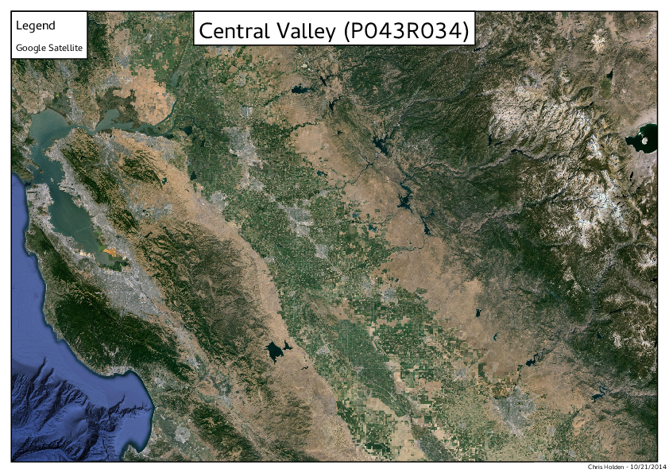
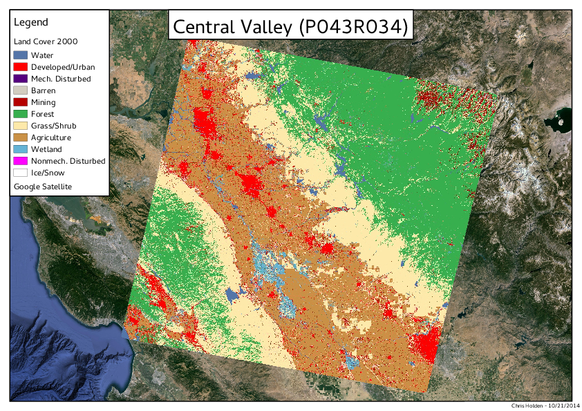
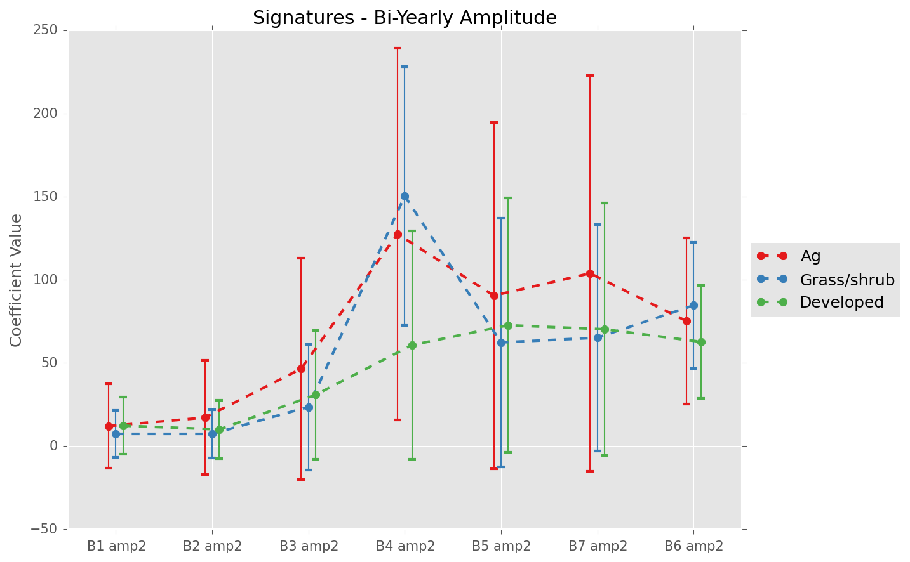

Landsat timeseries classification for monitoring land cover change and transitions
Chris Holden
December 12, 2014
Why?
IPCC 5th Assessment Report
Why?
- Proxy for biogeochemical processes and energy balance
- Competition among land uses
- Subject to continue changing
Land Cover
How: traditionally?
- Passive optical measurement of radiation
- Stable classes inferred from spectral and spatial context
- Change assessed using several "snapshots" in time
- Change between stable classes
- Epochs (e.g., ~1990 - 2000, 2000 - 2010)
Land Cover
How: recently?
Kennedy et al. 2014
"Bring an ecological view of change to Landsat-based remote sensing"
Why not use all the data?
- Some of the data
- Vegetation Change Tracker (VCT) (Huang et al 2010)
- LandTrendr (Kennedy et al 2010)
- Hansen et al 2013
- Most of the data
- Break detection For Additive and Seasonal Trends (BFAST) (Verbesselt et al 2012)
- Continuous Change Detection and Classification (CCDC) (Zhu and Woodcock 2014)
These algorithms have (mostly) only been applied to forests conversion
Example
NIR reflectance - 2 observations

NIR reflectance - growing season observations
NIR reflectance - growing and leaf-off observations

NIR reflectance - all available* observations

NIR reflectance - CCDC model fit
Research Questions
- What "spectro-temporal" signatures are most important for separating land cover classes?
- Can transitional subclasses be reliably identified?
- How do observations conditions influence "spectro-temporal" signatures?
Land Cover Trends

Land Cover Trends Ecoregions
Land Cover Trends
Epochs: 1972, 1980, 1986, 1992, 2000
Stand Age / Regrowth Trajectory
- Non-Forest in 1992 to Forest in 2000
- Non-Forest in 1986 to Forest in 2000
- Non-Forest in 1980 to Forest in 2000
- Non-Forest in 1972 to Forest in 2000
"Spectro-Temporal" signatures
Note:
The following plots show mean coefficient values with standard deviation error bars for timeseries models matching Land Cover Trends classes for the year 2000. Number of pixels in each average varies by class, but herb/shrub, agriculture, and forest usually have 5,000+ pixels across several sample blocks
Plot labels:
- "beta0" - intercept
- "beta1" - slope
- "amp1" - 1 year period sine/cosine amplitude
- "amp2" - 1/2 year period sine/cosine amplitude
- "B*" - Landsat TM/ETM band designations
Colorado
Forests


Agriculture and Grass/Shrubs


Central Valley, California


Forests


Agriculture, Grass/Shrubs, and Developed


Florida
Forests


Agriculture, Grass/Shrubs, and Developed


Conclusions
- Linear regression intercepts behave similarly to single date spectral reflectances
- Seasonal dynamics and large temporal variability (high RMSE) help distinguish agriculture from unmanaged fields
- Regrowth signal of forest disturbance can persist after decades
- Regrowth signal visibility strongly affected by climate (CA & CO, versus FL)
BRDF
Note:
- Path/Rows: p034r032 (sunlit) and p035r032 (shaded)
- Land Cover Trends sample: samp21_0122, samp21_0235, samp21_0341
- Note: samp21_0235 had vast majority of forest regrowth pixels
- Plots generated by land cover class and spectral band
- Intercepts behave as normal spectral signals
- Slopes were surprising for me and I'm not really sure what the mechanism is behind the patterns
Intercepts


Slopes


Conclusions
- BRDF affects intercepts as expected
- Non-zero slopes in forests are biased
- Visible/SWIR slopes larger for sun-lit (p034r032)
- NIR slopes larger for sun-shaded (p035r032)
- Older forests have less bias in intercept
- See stable forest versus NF86->F (was not forest in 86, was in 92 and 2000)
- Directionality important factor in spectro-temporal signatures
- Some previous work of mine suggests combined timeseries introduce additional noise, but result in non-biased models (next thing for me to test!)